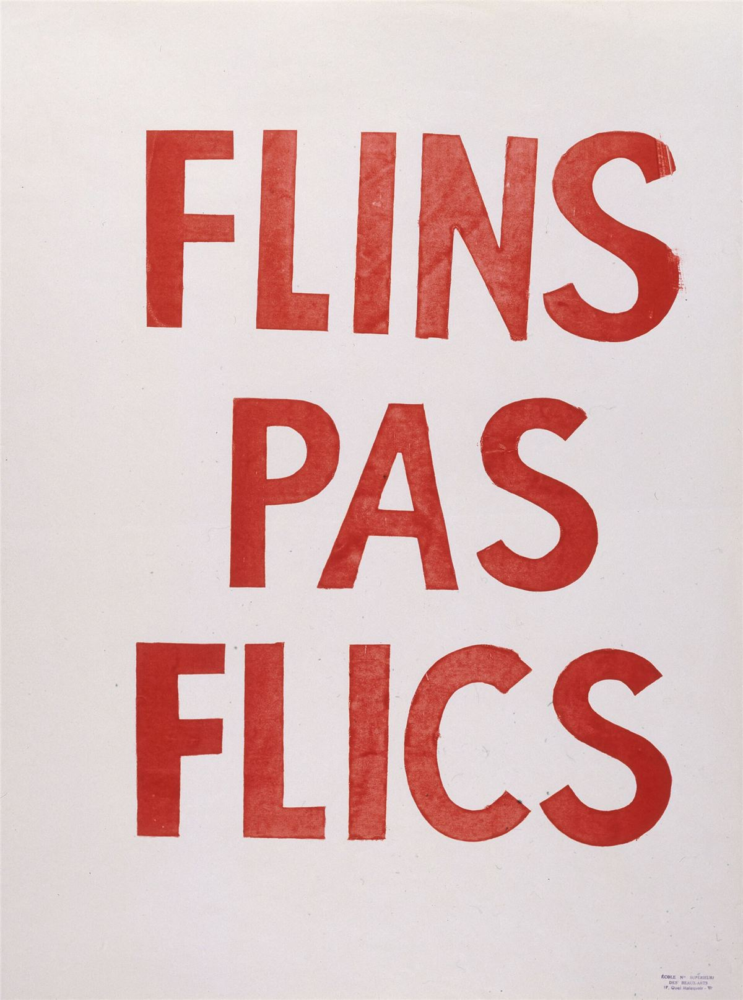

Avant les imprimantes, la bande à Mamie tirait ses affiches à la main. En Mai 68, l'Atelier populaire des Beaux-Arts de Paris en tirait par centaines en sérigraphie. La technique n'a pas changé, et elle reste la meilleure façon d'imprimer beaucoup, pas cher, sur presque tout : papier, tissu, carton, sacs.
Le principe
On tend un tissu à mailles fines sur un cadre : c'est l'écran. On bouche les mailles partout, sauf là où l'on veut de l'encre. On pose l'écran sur le papier, on étale l'encre dessus avec une raclette : l'encre passe seulement à travers les trous, et le dessin apparaît. On recommence pour chaque feuille. Une couleur = un écran.
Le matériel
- Un cadre en bois ou en alu, avec un tissu de sérigraphie (polyester) bien tendu et agrafé. On en trouve tout faits dans les magasins de beaux-arts. Une maille assez ouverte convient pour le tissu, une plus fine pour le papier.
- Une raclette un peu plus large que le dessin.
- De l'encre à l'eau, pour papier ou pour textile : elle se nettoie à l'eau, sans solvant.
- Du scotch de masquage, du papier journal, des pinces à linge et une ficelle pour faire sécher.
Trois façons de faire son écran
1. Le pochoir en papier (le plus simple)
Découpe ton dessin au cutter dans une feuille de papier fin. Pose-la sous l'écran : au premier passage, l'encre la colle au tissu. Ça tient une ou deux dizaines de tirages : parfait pour une affiche d'urgence ou un atelier avec des enfants.
2. Le dessin direct
Tu dessines au pinceau sur l'écran avec un fluide à dessiner, tu recouvres tout l'écran de bouche-pores, puis tu laves : le fluide part et laisse ton dessin ouvert. Pas besoin de lumière ni de chambre noire : idéal pour les lettrages faits main.
3. L'émulsion photosensible (le plus précis)
On enduit l'écran d'une émulsion sensible à la lumière, on pose dessus son dessin imprimé en noir sur un transparent, et on expose à une lampe : la lumière durcit l'émulsion partout, sauf sous le noir, qui part au rinçage. C'est ce qu'on fait dans les ateliers : ça permet des lettres fines et des photos tramées. Il faut un coin sombre et un peu d'entraînement.
Tirer
- 1Fixe le papier toujours au même endroit, avec des repères en scotch sur la table.
- 2Pose l'écran, verse un cordon d'encre en haut du dessin.
- 3Tire la raclette vers toi, inclinée, d'un seul geste ferme.
- 4Soulève l'écran, mets la feuille à sécher, recommence.
- 5Lave l'écran tout de suite après : l'encre sèche bouche les mailles pour de bon.

Apprendre avec d'autres
Le plus simple est d'aller dans un atelier de sérigraphie associatif ou un lieu autogéré : beaucoup ont des écrans, une table d'insolation et des personnes qui transmettent, souvent à prix libre. Demande dans les librairies militantes et les lieux de la carte des collectifs. Et une fois que tu sais faire : transmets à ton tour.
Sources et pour aller plus loin
Sur le site
- Faire un tractLe message, la mise en page et les mentions à mettre.
- Coller des affichesUne fois les affiches tirées, les mettre au mur.
- La carte des collectifsLieux autogérés et librairies où trouver un atelier.
Sur le web
- Infokiosques.netDes centaines de brochures et affiches militantes à imprimer et diffuser.
Fiche rédigée par la bande à Mamie. Libre de reproduction.